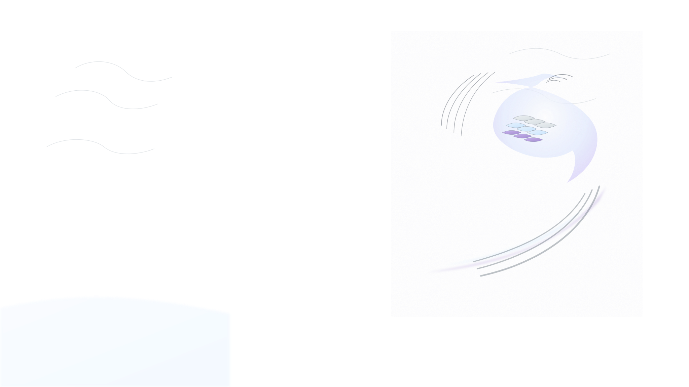

国学智能词典
以简驭繁 · 智解文义
🔧 演示模式
- 当前使用模拟数据，如需真实AI查询请配置API服务器

古文原文 / Classical Text
上传原文截图
字/词查询 / Character · Word
支持多字/生僻字；按 Enter 快速查询 · Supports multiple/rare characters; press Enter
上传生僻字截图 · Upload rare‑character screenshot
上传生僻字截图
AI 智能查询 · AI Smart Lookup
复制结果 · Copy
清空输入 · Clear
查询结果将显示在这里...
查询历史 · History
仅看收藏 · Favourites only
导出历史 · Export
导入历史 · Import
清空历史 · Clear